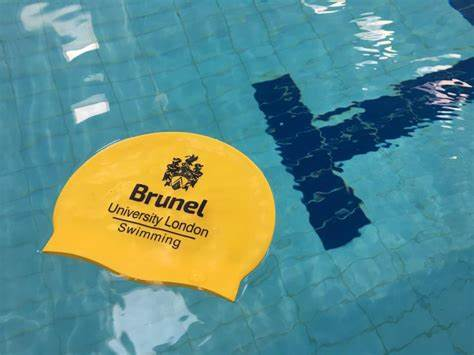
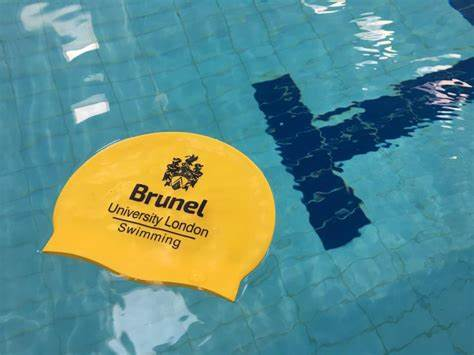

Welcome to Brunel University Sports Centre
Established in 1966, the Brunel University Sports Centre has been at the heart of student athletic development for over five decades. Originally founded as a modest facility with just a gymnasium and a small outdoor field, it has grown into one of the premier university sports complexes in the United Kingdom.
Our mission is to provide state-of-the-art facilities and expert coaching to support both recreational athletes and those competing at the highest levels. We believe that physical activity is an essential component of a well-rounded education and personal development.
A Message from our Director
"At Brunel University Sports Centre, we strive to create an inclusive environment where all students can discover their athletic potential. Our world-class facilities and dedicated staff are committed to helping every student achieve their personal fitness goals, whether that's maintaining a healthy lifestyle or competing at an elite level. We're not just building athletes; we're developing well-rounded individuals who understand the value of teamwork, perseverance, and dedication."
- Dr. Sarah Williams, Sports Director
Our Facilities
The Brunel University Sports Centre boasts an impressive range of facilities designed to cater to all sporting needs:
- Olympic-sized swimming pool
- Multi-purpose sports hall
- State-of-the-art fitness center with the latest equipment
- Indoor running track
- Outdoor athletics track
- Tennis and squash courts
- Football, rugby, and cricket pitches
- Dance and yoga studios
- Climbing wall
Student Experiences
Hear directly from our students about how the Brunel Sports Centre has impacted their university experience and athletic development. From casual participants to competitive athletes, our facilities and programs have something to offer everyone.
Opening Hours
The Sports Centre is open seven days a week to accommodate the busy schedules of our students and staff:
- Monday to Friday: 6:00 AM - 10:00 PM
- Saturday and Sunday: 8:00 AM - 8:00 PM
- Bank Holidays: 10:00 AM - 6:00 PM
Ready to get started? Explore our sports programs or learn about membership options.